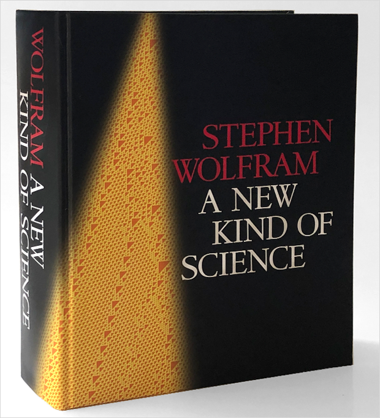
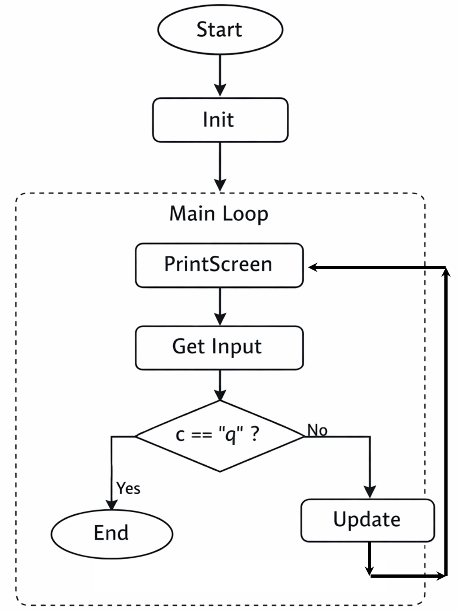
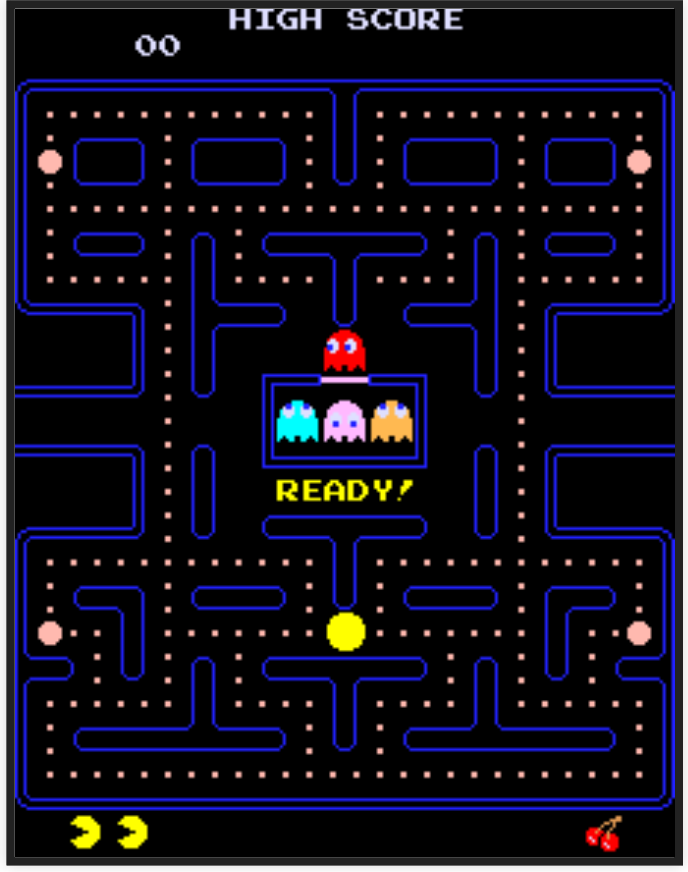

Python Programming
Lecture 8 Complex Systems
8.1 Complex Systems
Complex Systems (复杂系统)
- A complex system consists of many simple components that interact with each other.
- Each component is usually easy to understand on its own.
- However, when many components interact, the system may exhibit emergent behavior（突现行为） — patterns that cannot be predicted by studying individual parts alone.
- This is why complex systems are often difficult to analyze, predict, or control.
-
Examples:
Natural systems: climate, ecosystems, cells
Engineered systems: power grids, transportation networks, software systems
Social systems: cities, economies, online platforms
Example 1: bird flock (Complex Adaptive Systems, 复杂自适应系统)
- Each bird follows only simple local rules.
- No leader. No central control.
- 1. Stay together; 2. Do not crash into each other; 3. Avoid predators and obstacles

Example 2: Butterfly Effect (Chaos Theory, 混沌理论)
- Small changes in the beginning can lead to huge differences later.
- Even if the system follows deterministic rules.
- This makes long-term prediction very difficult.
- Example: a tiny disturbance may eventually affect a storm.

Example 3: pattern formulation (Fractal Theory, 分形理论)
- Fractals are patterns that repeat themselves at different scales.
- Zoom in, and you see similar structures again and again.
- They are often generated by simple rules applied repeatedly.


Mandelbrot set (曼德勃罗集--“上帝的指纹”)

- A very simple rule:
- $z_{n+1} = z_n^2 + c$
- Start from $z_0 = 0$, and repeat this rule many times.
- If the value stays bounded → it belongs to the set.
- Simple rule + repeated iteration → infinite complexity
How Do We Study Complex Systems?
- Complex systems are hard to understand directly.
- Instead, we use a simple approach:
- Step 1: Identify simple rules
- Step 2: Let the system evolve (repeat many times)
- Step 3: Observe what happens
- This is exactly what programming does.
- The 2021 Nobel Prize in Physics recognized work on complex systems, particularly in understanding and modeling Earth’s climate.
- 对此领域有兴趣可进一步了解：BBC纪录片-神秘的混沌理论（2009）
With Python, we can simulate systems like:
- Vicsek鸟群模型
- A Forest Fire Model 森林火灾模型
- Epidemics and Herd Immunity 模型
- Cellular Automaton (元胞自动机)
8.2 Cellular Automaton
Cellular Automaton (元胞自动机)
- A cellular automaton is a system made of many cells arranged in a line or grid.
- Each cell has a simple state (e.g., black or white).
- The system starts from an initial pattern.
- Then it follows simple rules to update all cells.
- This process is repeated again and again (iteration).
- Simple rules + repeated updates → complex patterns

- A cellular automaton runs by itself once the rules are defined.
- That is why it is called an automaton.
- British scientist Stephen Wolfram studied simple cellular automata and showed that:
- Very simple rules can produce surprisingly complex behavior.

Simple Cellular Automaton (Rule 30)

- Start with one black cell; all others are white.
- Apply a fixed rule to update each cell based on its neighbors.
- Repeat this process many times.
- No randomness is involved.
- Yet the pattern looks random and highly complex.
- (Rule 30) Demo
-
Wolfram described his work in detail in his book A New Kind of Science (2002).
- Cellular automata follow simple local rules.
- They involve repeated interactions over time.
- They can produce complex global behavior.
- Complexity can arise from very simple systems.

8.3 Game of Life
Game of Life (生命演化游戏)
-
Probably the most famous cellular automaton was invented by John Conway and is called the Game of Life.
-
Conway was a Professor Emeritus of Mathematics at Princeton University in New Jersey.
-
Conway's automaton consists of cells that are laid out on a two-dimensional grid.

- Each cell looks at its 8 neighbors.
- It counts how many neighbors are alive.
- Based on this number, the cell updates its state.
-
Rules
-
A live cell that has fewer than 2 live neighbors dies from loneliness.
-
A live cell that has more than 3 live neighbors dies from overcrowding.
-
A live cell that has 2 or 3 live neighbors stays alive.
-
A dead cell that has exactly 3 live neighbors becomes alive.
-

import os
import random
width = 60
height = 60
screen = []
Step 1: Initialization
def Init():
for i in range(height):
line = []
for j in range(width):
if random.random() > 0.8:
line.append('#')
else:
line.append(' ')
screen.append(line)
Step 2: Show the screen
def PrintScreen():
for i in range(height):
for j in range(width):
print(screen[i][j] + ' ', end='')
print()
Step 3: Get cells
def TryGetCell(i, j):
i = i % height
j = j % width
return screen[i][j]
print(59 % 60) # 59
print(60 % 60) # 0
print(0 % 60) # 0
print(-1 % 60) # 59
Step 4: Count cells nearby
def GetNearbyCellsCount(i, j):
num = 0
for x in [
TryGetCell(i-1, j-1), TryGetCell(i-1, j), TryGetCell(i-1, j+1),
TryGetCell(i, j-1), TryGetCell(i, j+1),
TryGetCell(i+1, j-1), TryGetCell(i+1, j), TryGetCell(i+1, j+1)
]:
if x == '#':
num += 1
return num
Step 5: Update
def Update():
global screen
newScreen = [[' ' for x in range(width)] for y in range(height)]
for i in range(height):
for j in range(width):
count = GetNearbyCellsCount(i, j)
if count == 3:
newScreen[i][j] = '#'
elif count == 2:
newScreen[i][j] = screen[i][j]
else:
newScreen[i][j] = ' '
screen = newScreen
Step 6: Console (for win). For mac, replace "cls" by "clear".
def Start():
os.system("cls")
print('== Game of Life ==')
input('Press Enter to start...')
Init()
while True:
os.system("cls")
PrintScreen()
c = input()
if c == 'q':
break
Update()
print('End')

-
When the Game of Life begins, it often looks chaotic, with live cells quickly spreading and changing. After a while, it usually settles into a stable pattern or forms small groups that flip back and forth. Early researchers wondered: "Is there a starting pattern that keeps growing forever?"
-
Glider
-
Glider gun
- 史诗般的生命游戏


A Classic Game with Complex Behavior
- Pac-Man (Japanese: パックマン Hepburn: Pakkuman), stylized as PAC-MAN, is an arcade game developed by Namco and first released in Japan in May 1980. Free pacman game

Complex behavior is not always the result of complex intelligence.
Summary
- Functions
- Reading: Python for Everybody, Chapter 4
- Reading: Python Crash Course, Chapter 8